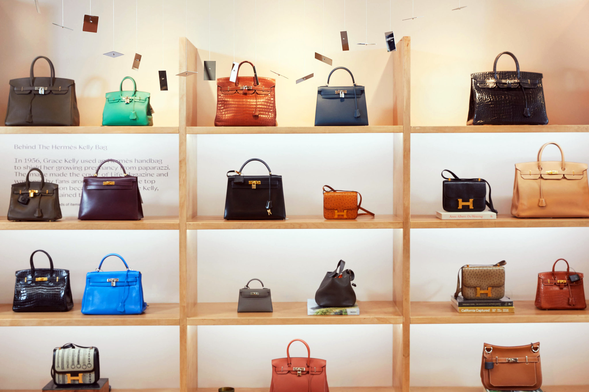
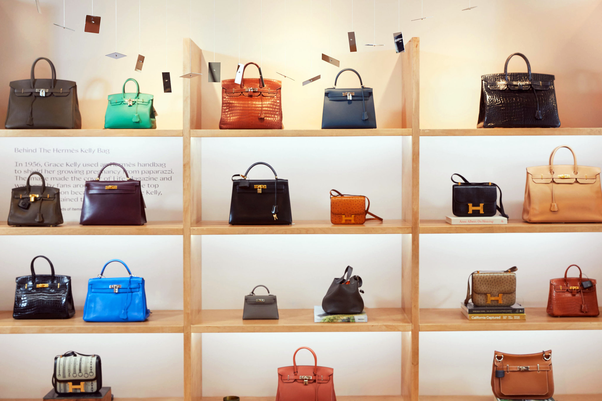

Hermès, is a French luxury design house established in 1837. In 1984, Hermès released the Birkin bag. They are amongst some of the most expensive bags in the world, ranging anywhere from $9,000 to half a million dollars. The bags embody absolute luxury and is even considered by some to be a better investment than gold or the stock market.

But, you can't just walk into a store to get one. You either have to be very wealthy, very important, or can try these tips that Noorie Ana used to get hers: (INSERT VIDEO)